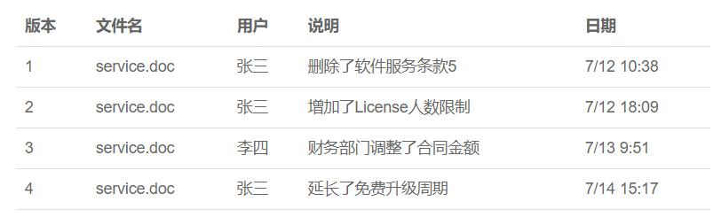

git教程
一、简介
Git 是一个开源的分布式版本控制系统，用于敏捷高效地处理任何或小或大的项目。
Git 是 Linus Torvalds 为了帮助管理 Linux 内核开发而开发的一个开放源码的版本控制软件。
Git 与常用的版本控制工具 CVS, Subversion 等不同，它采用了分布式版本库的方式，不必服务器端软件支持。
Git的两个主要用途： 代码备份和版本控制，你可以逐步处理代码，在需要回滚到备份副本的过程中保存每一步的进度！
二、背景
那什么是版本控制系统？
如果你用Microsoft Word写过长篇大论，那你一定有这样的经历：
想删除一个段落，又怕将来想恢复找不回来怎么办？有办法，先把当前文件“另存为……”一个新的Word文件，再接着改，改到一定程度，再“另存为……”一个新文件，这样一直改下去，最后你的Word文档变成了这样：

过了一周，你想找回被删除的文字，但是已经记不清删除前保存在哪个文件里了，只好一个一个文件去找，真麻烦。
看着一堆乱七八糟的文件，想保留最新的一个，然后把其他的删掉，又怕哪天会用上，还不敢删，真郁闷。
更要命的是，有些部分需要你的财务同事帮助填写，于是你把文件Copy到U盘里给她（也可能通过Email发送一份给她），然后，你继续修改Word文件。一天后，同事再把Word文件传给你，此时，你必须想想，发给她之后到你收到她的文件期间，你作了哪些改动，得把你的改动和她的部分合并，真困难。
于是你想，如果有一个软件，不但能自动帮我记录每次文件的改动，还可以让同事协作编辑，这样就不用自己管理一堆类似的文件了，也不需要把文件传来传去。如果想查看某次改动，只需要在软件里瞄一眼就可以，岂不是很方便？
这个软件用起来就应该像这个样子，能记录每次文件的改动：

这样，你就结束了手动管理多个“版本”的史前时代，进入到版本控制的20世纪。
三、Git安装配置
在使用Git前我们需要先安装 Git。Git 目前支持 Linux/Unix、Solaris、Mac和 Windows 平台上运行。
windows平台安装
国内镜像：https://npm.taobao.org/mirrors/git-for-windows/。
安装完成，就可以是哦那个git命令行工具，同时也带有图形界面的工具
开始菜单找到git bash，打开git 命令窗口，就可以执行git操作了。
四、Git配置
Git 提供了一个叫做 git config 的工具，专门用来配置或读取相应的工作环境变量。
这些环境变量，决定了 Git 在各个环节的具体工作方式和行为。这些变量可以存放在以下三个不同的地方：
/etc/gitconfig文件：系统中对所有用户都普遍适用的配置。若使用git config时用--system选项，读写的就是这个文件。~/.gitconfig文件：用户目录下的配置文件只适用于该用户。若使用git config时用--global选项，读写的就是这个文件。- 当前项目的 Git 目录中的配置文件（也就是工作目录中的
.git/config文件）：这里的配置仅仅针对当前项目有效。每一个级别的配置都会覆盖上层的相同配置，所以.git/config里的配置会覆盖/etc/gitconfig中的同名变量。
用户信息
在使用git前，我们需要配置下用户名和电子邮件地址，当我们提交的时候可以告诉git我们是谁。
$ git config --global user.name "rlwb"
$ git config --global user.email rlwb@gmail.com